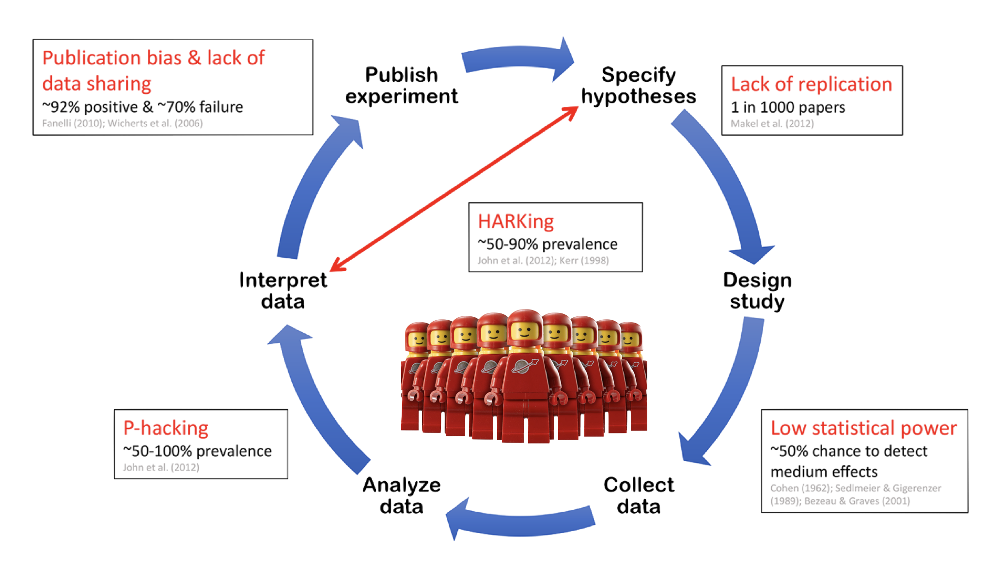
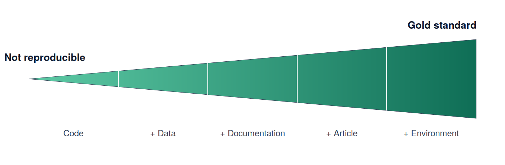
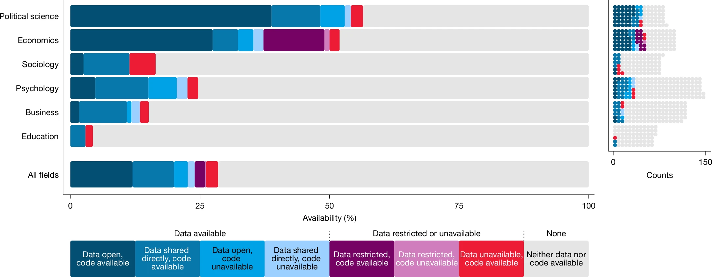
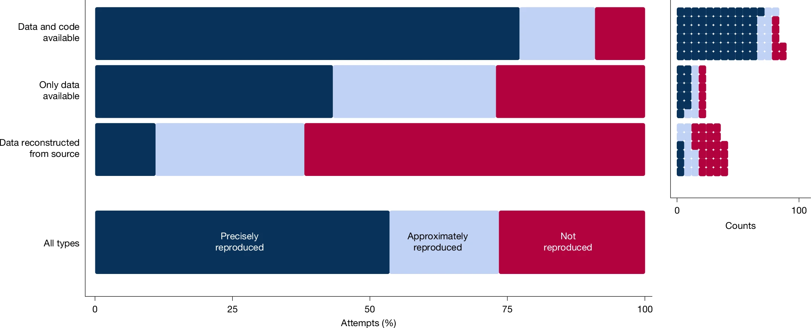

Would That It Were So Simple: Computational Reproducibility Using Nix and rix
2026-09-11
The Replication Crisis

From A manifesto for reproducible science. https://doi.org/10.1038/s41562-016-0021
Replication Crisis Credibility Revolution!
Open Science
Being open and transparent across all stages of the research process
Key components:
Dissemnation
Stance
Workflow
- Is your entire project pipeline reproducible?

What is Reproduciblity?
| Analysis / Data | Same Data | Different Data |
|---|---|---|
| Same Analysis | Reproducible | Replicable |
| Different Analysis | Robust | Generalisable |
Reproducibility Spectrum

How are we doing?
SCORE reproduciibiliy project
- 600 papers across 62 journals from several different fields examined between 2009-2018

How are we doing?

Miske, O., Abatayo, A.L., Daley, M. et al. Investigating the reproducibility of the social and behavioural sciences. Nature 652, 126–134 (2026). https://doi.org/10.1038/s41586-026-10203-5
A True Story
- A
brmsparameterization pitfall in ex-Gaussian RT modeling - Package update → silently different defaults
- Same script, different numbers, no error thrown
The scary part: nothing crashed.
Why Psych Pipelines Are Fragile
- Long chains: raw eye-tracking/EEG → preprocessing → modeling → figures
- Dependency rot: R, Stan, brms, OS libraries all drift independently
- Ad hoc scripts with no captured environment
- “It worked on my machine” (six months ago)
Reproducibility ≠ One Thing
It’s a stack, with a failure point at every layer:
- Environment
- Workflow / analysis
- Statistical modeling
- Continuous verification
- Materials & data hosting
Psychology not so good 😟
Not Just Data: Enviorment Fragility
▶ Software version — e.g., syntax (|>), defaults (stringsAsFactors), and even the RNG change across versions.
▶ packages — e.g., functions get renamed, deprecated, defaults.
▶ Document tools — e.g., Pandoc, LaTeX, Quarto, Juypter
▶ System-level dependencies — e.g., compilers, libpng, BLAS/LAPACK.
▶ Issue: combining incomplete tools (i.e., stabilize parts of it), which may require diverse expertise (e.g., {renv}, {groundhog}, {rang}, {rig}, and Docker).
Layer 1: Environment
- Containers vs. Nix
- Nix /
{rix}gives declarative, exact, cross-platform environments - Real example: macOS (Apple Silicon) + Determinate Nix
- Quarto/pandoc version mismatches
rstudioWrappersegfaults- Binary cache trust config
Layer 2: Workflow — Quarto
- Literate programming: code + prose + output, one document
- Parameterized reports (rerun for new datasets/conditions)
- One source of truth from raw data to manuscript
Layer 3: Statistical Modeling
cmdstanRwith pinned versions- Explicit seeds
- Document your parameterization — don’t trust defaults
- Revisit the ex-Gaussian pitfall: what changed, what it cost
Layer 4: Continuous Verification
- GitHub Actions: does the pipeline rerun from scratch?
- Not “it works on my laptop” — it works on a clean machine, every push
- A green badge is a reproducibility claim you can point to
Layer 5: Materials & Data Hosting
- Case study: OSF Projects being phased out
- Lesson: don’t bet your archive on one platform forever
- Emerging split model:
- GitHub → code, materials
- ResearchBox.org → curated, citable data packages
- Registered Reports as a structural incentive, not just preregistration
Live Demo
- Minimal
rix()-generated environment - Quarto doc rendering a Bayesian model
- GitHub Actions badge confirming a clean rerun
What a Lab Can Actually Do
Not ready for Nix? Start smaller:
renvfor R dependency snapshots- Docker for a shared environment
- A basic GitHub Actions check that the analysis still runs
Reproducibility is a ladder, not a cliff.
Culture, Not Just Tools
- Train RAs on environment capture from day one
- Make “can a stranger rerun this?” a lab norm
- Incentives matter more than any single tool
Takeaways
- Computational reproducibility is a stack — find your weakest layer
- Small, boring habits (pinning, CI, version control) beat heroic one-off fixes
- Plan for platform churn (OSF → elsewhere) before it forces your hand
Questions?
Thanks!
Princeton 2026